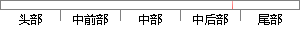

5 时间管理模块的实现
片段位置图

相似结果
相似片段：基于Android平台的时间管理模块的设计... 本文详细介绍了基于Android平台的时间管理模块的设计实现过程并...基于Android平台的时间管理模块 5 资源管理器Resource Manage...
| 标题 | 《论文- 大学课件 - 道客巴巴》 |
| 对比库 | PaperRater云论文库 |
| 网址 | http://www.doc88.com/p-697306847768.html |
| 相似率 | 100% （严重抄袭） |